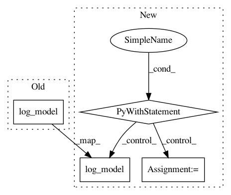

f7fbaa4af00336eebc0c9c0f31ee4f72c158d653,tests/onnx/test_onnx_model_export.py,,test_model_log_evaluate_pyfunc_format,#Any#Any#Any#,351
Before Change
if should_start_run:
mlflow.start_run()
artifact_path = "onnx_model"
mlflow.onnx.log_model(onnx_model=onnx_model, artifact_path=artifact_path)
model_uri = "runs:/{run_id}/{artifact_path}".format(
run_id=mlflow.active_run().info.run_id, artifact_path=artifact_path
)
After Change
def test_model_log_evaluate_pyfunc_format(onnx_model, data, predicted):
x = data[0]
with mlflow.start_run() as run:
artifact_path = "onnx_model"
mlflow.onnx.log_model(onnx_model=onnx_model, artifact_path=artifact_path)
model_uri = "runs:/{run_id}/{artifact_path}".format(
run_id=run.info.run_id, artifact_path=artifact_path
)
// Loading pyfunc model
pyfunc_loaded = mlflow.pyfunc.load_pyfunc(model_uri=model_uri)
assert np.allclose(
pyfunc_loaded.predict(x).values.flatten(), predicted, rtol=1e-05, atol=1e-05
)
// test with a single numpy array
np_ary = x.values
// NB: Onnx wrapper returns a dictionary for non-dataframe inputs, we want to get the
// numpy array belonging to the first (and only) model output.
def get_ary_output(args):
return next(iter(pyfunc_loaded.predict(args).values())).flatten()
assert np.allclose(get_ary_output(np_ary), predicted, rtol=1e-05, atol=1e-05)
// test with a dict with a single tensor
assert np.allclose(get_ary_output({"input": np_ary}), predicted, rtol=1e-05, atol=1e-05)
@pytest.mark.large
def test_model_save_evaluate_pyfunc_format_multi_tensor(
multi_tensor_onnx_model, data, multi_tensor_model_prediction
):
In pattern: SUPERPATTERN
Frequency: 3
Non-data size: 4
Instances
Project Name: mlflow/mlflow
Commit Name: f7fbaa4af00336eebc0c9c0f31ee4f72c158d653
Time: 2021-02-12
Author: 33237569+tomasatdatabricks@users.noreply.github.com
File Name: tests/onnx/test_onnx_model_export.py
Class Name:
Method Name: test_model_log_evaluate_pyfunc_format
Project Name: polyaxon/polyaxon
Commit Name: 3866d7dc073ae983c7390bc5b1e604fea4360217
Time: 2020-04-24
Author: mouradmourafiq@gmail.com
File Name: core/tests/test_tracking/test_run_tracking.py
Class Name: TestRunLogging
Method Name: test_log_model_dir
Project Name: polyaxon/polyaxon
Commit Name: 3866d7dc073ae983c7390bc5b1e604fea4360217
Time: 2020-04-24
Author: mouradmourafiq@gmail.com
File Name: core/tests/test_tracking/test_run_tracking.py
Class Name: TestRunLogging
Method Name: test_log_model_file